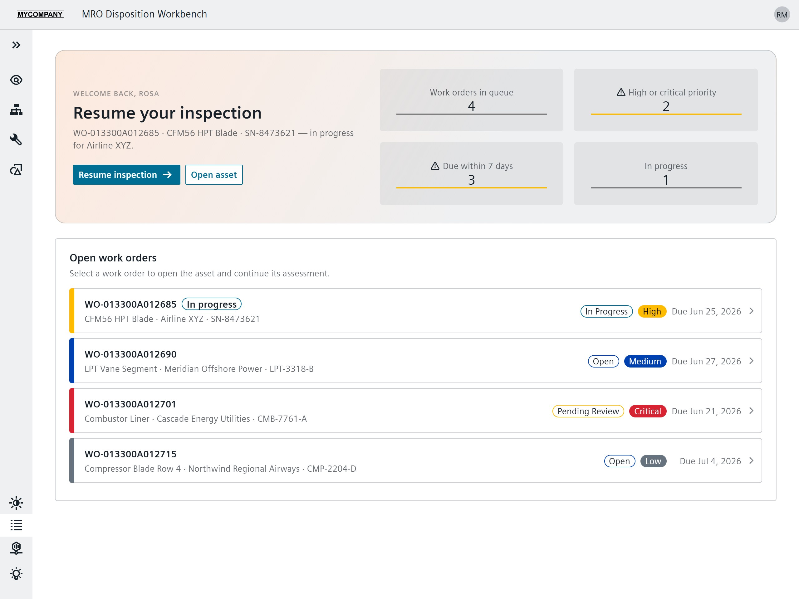

Digital Fabric · Selected work
MRO Workbench
A maintenance, repair, and overhaul (MRO) workbench that keeps inspection evidence, product context from the lightweight Jupiter Tessellation (JT) 3D engineering format, the service bill of materials (service BOM), repair planning, and disposition inside one guided work-order flow.
- Entry point
- Sample maintenance work order
- Evidence
- Inspection + damage assessment
- Product context
- Asset, service bill of materials (BOM), JT 3D model
- Decision
- Guided disposition

The work order, asset context, and findings were split apart
Inspection findings, the affected assembly, service structure, repair planning, and final disposition belong to one maintenance decision.
The prototype explores how to keep those elements in a coherent operator flow. The goal is not another dashboard; it is continuity from the work order through the evidence and into the decision.
I put the maintenance workflow in one workspace
I designed and implemented a React workbench that carries a sample order through inspection review, damage assessment, repair planning, and disposition.
Role of generative AI. I used generative AI as an implementation partner while supplying the maintenance workflow, interface constraints, and acceptance judgment.
- Structured the workflow. The interface preserves progress across the order instead of presenting unrelated maintenance modules.
- Kept product context close. Asset and service-BOM information sit alongside JT assembly context and the inspection evidence.
- Used an industrial component system. Siemens iX provides the application shell and controls; Zustand maintains the work-order state across the flow.
The browser build runs the full sample workflow
The linked case artifact is the packaged React interface, not a recreated portfolio mockup.
- Guided order: open the sample work order, review its asset and service BOM, and resume the recorded damage assessment.
- Disposition path: carry findings forward into the repair and disposition step.
- Runtime evidence: the project package confirms React 19, Vite, Siemens iX, and Zustand.
- 3D context: a bundled JT engine-assembly fixture supplies browser-safe product context.
Public-demo boundary: the build uses a sample work order, bundled inspection imagery, and local geometry. It does not connect to a production maintenance system.
The work order keeps its evidence as it moves
The resulting prototype makes the work order the spine of the experience: evidence, assembly context, assessment, plan, and disposition remain visibly connected.
No operational improvement metric is asserted. What the working build demonstrates is a coherent interaction model for carrying maintenance evidence into a disposition decision.
Work order → assessment → disposition
Each stage adds context without discarding the prior decision record. The browser build keeps that logic local and deterministic.